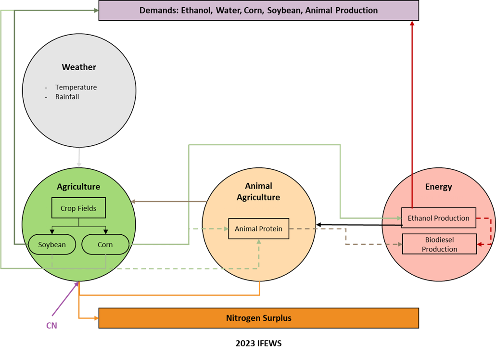
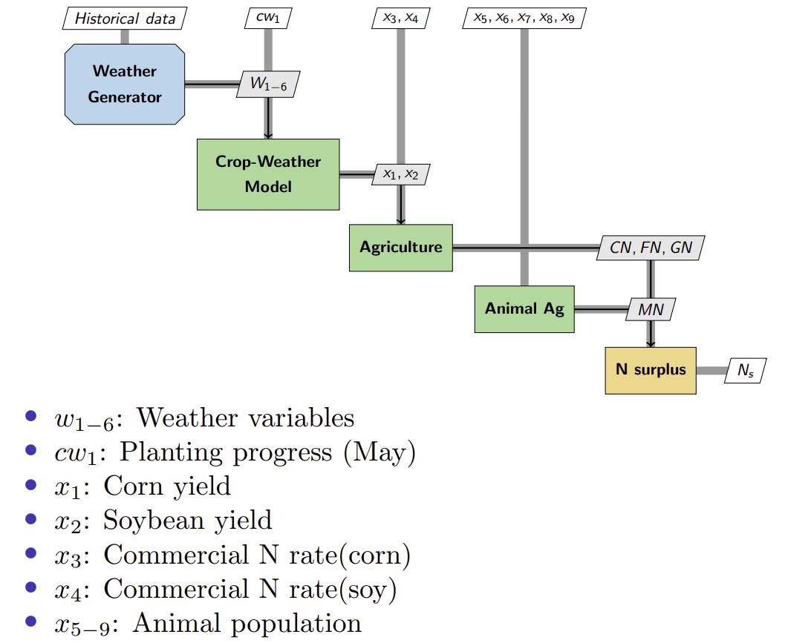

Iowa Food-Energy-Water system (IFEWs)
The model for the Iowa Food-Energy-Water system (IFEWs) is a Python-based model that encodes the interdependencies and evolution of Food-Energy-Water (FEW) resources using NASA’s OpenMDAO framework. This model uses a theory of multidisciplinary analysis and optimization (MDAO) with a focus on balancing the independent food, water, and energy disciplines. Its primary objective is to develop an interface that aids in decision-making for the long-term sustainability and resilience of Iowa’s ecosystem while meeting the state’s socioeconomic needs and considering the environmental impact of nitrogen export.
Figure 1 provides a visual representation of the systems under consideration and their interdependencies, as indicated by the directional arrows.
{kind=link}
Figure 1 : IFEW system model
The analysis of the system, employing MDAO, can be comprehensively visualized in eXtended Design Structure Matrix (XDSM) as shown in figure 2.
{kind=link}
Figure 2 : XDSM of IFEW system model
Introduction
The initial pages of the documentation provide a thorough explanation of the setup and basic instructions of required packages. It is recommended to review the following sections to gain an understanding of how IFEWs model is constructed.
IFEWs Main Model
After you have successfully set up the requirements and examined the fundamental guides, you can progress to explore the main IFEWs model with several independent subsystems presented below.
Visualization
Once you generate and acceess the output, you can visualize it to various formats with following methods: